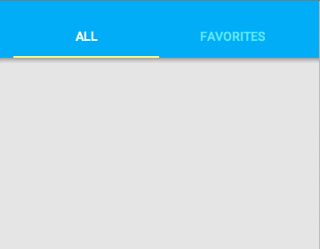
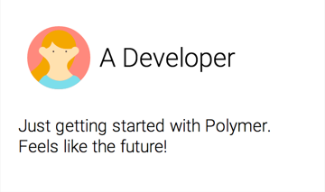
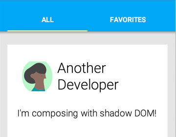
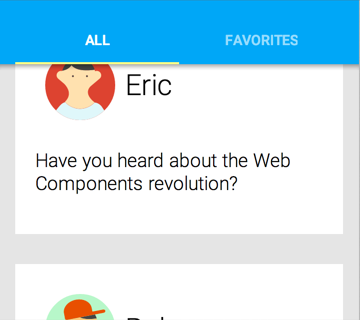
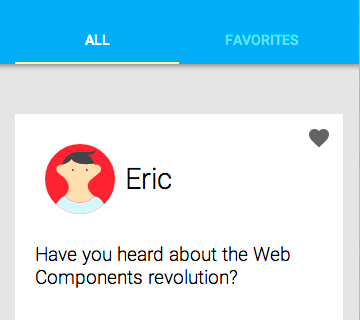

  <link rel="import" href="bower_components/polymer/polymer.html">
  <link rel="import" href="bower_components/core-icons/core-icons.html">
  <link rel="import" href="bower_components/core-animated-pages/core-animated-pages.html">
  <link rel="import" href="bower_components/core-animated-pages/transitions/cross-fade.html">
  <link rel="import" href="bower_components/core-animated-pages/transitions/slide-from-right.html">
  <link rel="import" href="bower_components/paper-shadow/paper-shadow.html">
  
  <link rel="import" href="bower_components/paper-fab/paper-fab.html">

<polymer-element name="gdg-slider" on-keydown="{{keypressHandler}}">
  <template>
  <style>
  @-webkit-keyframes fadeInDown {
	  0% {
	    opacity: 0;
	    -webkit-transform: translate3d(0, -100%, 0);
	  }
	
	  100% {
	    opacity: 1;
	    -webkit-transform: none;
	  }
	}
    @-webkit-keyframes fadeInRight {
	  0% {
	    opacity: 0;
	    -webkit-transform: translate3d(100%, 0, 0);
	  }
	
	  100% {
	    opacity: 1;
	    -webkit-transform: none;
	  }
	}
  	@-webkit-keyframes fadeInUp {
	  0% {
	    opacity: 0;
	    -webkit-transform: translate3d(0, 100%, 0);
	  }
	
	  100% {
	    opacity: 1;
	    -webkit-transform: none;
	  }
	}
	
	.fadeInUp,p{
	  -webkit-animation-name: fadeInUp;
	  -webkit-animation-duration: 1s;
	  -webkit-animation-delay: 0ms;
	}
	@-webkit-keyframes bounceInDown {
		0% {
			opacity: 0;
			-webkit-transform: translateY(-2000px);
		}
	
		60% {
			opacity: 1;
			-webkit-transform: translateY(30px);
		}
	
		80% {
			-webkit-transform: translateY(-10px);
		}
	
		100% {
			-webkit-transform: translateY(0);
			opacity: 1;
		}
	}
	@-webkit-keyframes flipInY {
	  0% {
	    -webkit-transform: perspective(400px) rotateY(90deg);
	    opacity: 0;
	  }
	
	  40% {
	    -webkit-transform: perspective(400px) rotateY(-10deg);
	  }
	
	  70% {
	    -webkit-transform: perspective(400px) rotateY(10deg);
	  }
	
	  100% {
	    -webkit-transform: perspective(400px) rotateY(0deg);
	    opacity: 1;
	  }
	}
	.flipInY{
		-webkit-animation-name: flipInY;
		-webkit-animation-duration: 1s;
		-webkit-animation-delay: 500ms;
	}
	.bounceInDown{
		-webkit-animation-name: bounceInDown;
		-webkit-animation-duration: 1s;
		-webkit-animation-delay: 100ms;
	}
	.fadeInDown,h2,h1{
		-webkit-animation-name: fadeInDown;
		-webkit-animation-duration: 1s;
		-webkit-animation-delay: 0ms;
	}
    core-animated-pages{
      position: absolute;
      top: 0px;
      right: 0;
      bottom: 0;
      left: 0;
      font-size: 32px;
      overflow: hidden;
      background-color: #222;
      color: #eee;
    }
    p,h1,h2,h3,h4,h5{
    	padding: 5px;
    	margin: 0;	
    	word-break: break-all;
    }
    h1{
    	padding: 10px;
    }
    section{
    	width: 100%;
    }
    section > div {
      height: 100%;
      padding: 0 30px;
    }
    section.nav{
    	position: absolute;
    	bottom: 30px;
    	left: 0;
    }
    section.nav>div{
    	padding: 0 30px;
    }
    section.nav>div:first-child{
    	padding-right: 0;
    }
    #preBtn{
    	background: #999;
    }
    .me{
    	border-radius: 500px;
    }
	code{
		color: #9f499b;
		padding: 0 5px;
	}
	div{
		padding: 5px;
	}
	a,a:active,a:visited,a:link{
		padding: 0 5px;
		color: #e7ad52 !important;
		text-decoration: none;
	}
	a:hover{
		text-decoration: underline;
	}
	.left{
		position: absolute;
		top: -70px;
		left: -100px;
		width: 170px;
		height: 170px;
		-webkit-transform: rotate(-45deg);
		font-size: 15px;
		background: #999;
		font-weight: bold;
		color: #fff;
	}
	.left>span{
		padding: 10px;
	}
  </style>
  	<core-animated-pages id="pages" transitions="slide-from-right" selected="{{pageIndex}}">
    <section style="overflow: hidden;">
	  <div class="left" layout vertical center end-justified><span>Powered by Polymer</span><paper-shadow z="5"></paper-shadow></div>
      <div layout vertical center center-justified>
      	
        <h1>Polymer</h1>
        <p>Welcome To The World Of Tomorrow!</p>
      </div>
    </section>
    <section>
      <div layout vertical center-justified>
      	<h1>Polymer</h1>
      	<p>Platform (Polyfills)</p>
      	<p>Core Elements</p>
      	<p>Paper Elements(Material design)</p>
      	<p>Google APIs</p>
      	<p>Polymer Designer</p>
      	<p>Chrome Dev Editor</p>
      </div>
    </section>
    <section>
      <div layout vertical center-justified>
        <h1>Platform (Polyfills)</h1>
        <ul>
          <li>
            <h3>Custom Elements</h3>
            <p>document.registerElement() (custom-el must has -)</p>
          </li>
          <li>
            <h3>Shadow DOM</h3>
            <p>Light DOM, Shadow DOM, Composed (rendered) DOM</p>
          </li>
          <li>
            <h3>HTML Imports(<a target="_blank" href="http://zh.wikipedia.org/wiki/SPDY">SPDY</a>)</h3>
            <p>&lt;link rel="import" href="import-file.html"&gt;</p>
          </li>
          <li>
            <h3>Web Animations</h3>
            <p>CSS Transitions, CSS Animations, SVG Animations / SMIL, and requestAnimationFrame()</p>
          </li>
        </ul>
      </div>
    </section>
    <section>
      <div layout vertical center-justified>
        <h1>Shadow DOM</h1>
        <ol>
          <li><code>var el = document.createElement('div');<br>
              var shadow = el.createShadowRoot();<br>
              shadow.innerHTML = '&lt;content select="q"&gt;&lt;/content&gt;';<br>
              document.body.appendChild(el);</code>
          </li>
          <li>
              &lt;my-custom-element&gt;<br>
              &nbsp;&nbsp;&nbsp;&nbsp;&lt;q&gt;Hello World&lt;/q&gt;&lt;!--part of Light DOM--&gt;<br>
              &lt;/my-custom-element&gt;
          </li>
          <li><code>
              #document-fragment&lt;!-- everything in here shadow DOM --&gt;<br>
              &lt;span&gt;People say: &lt;content&gt;&lt;/content&gt;&lt;/span&gt;<br>
              &lt;footer&gt;sometimes&lt;/footer&gt;</code>
          </li>
          <li>
              &lt;my-custom-element&gt;<br>
              &nbsp;&nbsp;&nbsp;&nbsp;&lt;span&gt;People say: &lt;q&gt;Hello World&lt;/q&gt;&lt;/span&gt;<br>
              &nbsp;&nbsp;&nbsp;&nbsp;&lt;footer&gt;sometimes&lt;/footer&gt;<br>
              &lt;/my-custom-element&gt;
          </li>
        </ol>
      </div>
    </section>
    <section>
      <div layout vertical center-justified>
      	<h1>Core Elements</h1>
      	<p><a target="_blank" href="http://www.polymer-project.org/docs/elements/core-elements.html">www.polymer-project.org/docs/elements/core-elements.html</a></p>
    </section>
    <section>
      <div layout vertical center center-justified>
      	<div layout horizontal center-justified>
      		<div flex one layout vertical start-justified>
      			<h2>Visual</h2>
      			<p><code>&lt;core-header-panel&gt;</code><a target="_blank" href="bower_components/core-header-panel/">[^]</a></p>
      			<p><code>&lt;core-toolbar&gt;</code><a target="_blank" href="bower_components/core-toolbar/">[^]</a></p>
      			<p><code>&lt;core-drawer-panel&gt;</code><a target="_blank" href="bower_components/core-drawer-panel/">[^]</a></p>
      			<p><code>&lt;core-menu&gt;</code><a target="_blank" href="bower_components/core-menu/">[^]</a></p>
      			<p><code>&lt;core-icon&gt;</code><a target="_blank" href="bower_components/core-icon/">[^]</a></p>
      			<p><code>&lt;core-overlay&gt;</code><a target="_blank" href="bower_components/core-overlay/">[^]</a></p>
      			<p><code>&lt;core-animated-pages&gt;</code><a target="_blank" href="bower_components/core-animated-pages/">[^]</a></p>
	      	</div>
	      	<div layout vertical start-justified>
	      		<h2>Non-visual</h2>
      			<p><code>&lt;core-ajax&gt;</code><a target="_blank" href="bower_components/core-ajax/">[^]</a></p>
      			<p><code>&lt;core-localstorage&gt;</code><a target="_blank" href="../../io2014-codelabs/unbug/PolymerMobileCodelab/">[^]</a></p>
      			<p><code>&lt;core-range&gt;</code></p>
      			<p><code>&lt;core-media-query&gt;</code></p>
      			<p><code>&lt;core-iconset&gt;</code></p>
	      	</div>
      	</div>
      </div>
    </section>
    <section>
      <div layout vertical center-justified>
      	<h1>Material design with Polymer</h1>
      	<p>Application layout</p>
		    <p>Icons</p>
		    <p>Material controls</p>
		    <p>Dialogs, snackbars, and toasts</p>
		    <p>Material effects<p>
		    <p>Transitions</p>
		    <p>Scrolling techniques</p>
      </div>
    </section>
    <section>
      <div layout vertical center-justified>
      	<h1>Application layout<a target="_blank" href="http://www.polymer-project.org/docs/elements/layout-elements.html">[^]</a></h1>
      	<p><code>&lt;core-header-panel&gt;</code><a target="_blank" href="bower_components/core-header-panel/">[^]</a></p>
		<p><code>&lt;core-toolbar&gt;</code><a target="_blank" href="bower_components/core-toolbar/">[^]</a></p>
		<p><code>&lt;core-drawer-panel&gt;</code><a target="_blank" href="bower_components/core-drawer-panel/">[^]</a></p>
		<p><code>&lt;core-scaffold&gt;</code><a target="_blank" href="bower_components/core-scaffold/">[^]</a></p>
		    <br>
		    <p><a target="_blank" href="http://docs.polymerchina.org/components/core-header-panel/demo.html">DEMO(core-header-panel)</a></p>
      </div>
    </section>
    <section>
      <div layout vertical center-justified>
        <embed autobuffer height="500" align="middle" src="http://yuntv.letv.com/bcloud.swf" type="application/x-shockwave-flash" allowfullscreen="true" quality="high" allowscriptaccess="always" flashvars="uu=8c224024a0&amp;vu=ec1f3d494d&amp;auto_play=0&amp;gpcflag=1&amp;width=600&amp;height=500" wmode="transparent">
        <p><a target="_blank" href="http://www.google.com/design/">www.google.com/design/</a></p>
      </div>
    </section>
    <section>
      <div layout vertical center-justified>
      	<h1>Topeka App</h1>
      	<p><a target="_blank" href="http://www.polymer-project.org/docs/elements/paper-elements.html">www.polymer-project.org/docs/elements/paper-elements.html</a></p>
      	<h1>Material Playground</h1>
      	<p><a target="_blank" href="http://ebidel.github.io/material-playground/">ebidel.github.io/material-playground/</a></p>
      	<h1>Paper Calculator</h1>
      	<p><a target="_blank" href="http://www.polymer-project.org/components/paper-calculator/demo.html">www.polymer-project.org/components/paper-calculator/demo.html</a></p>
      	<h1>Polymer Chrome App</h1>
      	<p><a target="_blank" href="https://github.com/PolymerLabs/polymerchromeapp">https://github.com/PolymerLabs/polymerchromeapp</a></p>
        <br>
      	<p><a target="_blank" href="http://www.polymer-project.org/">http://www.polymer-project.org</a></p>
      	<p><a target="_blank" href="https://github.com/Polymer">https://github.com/Polymer</a></p>
      </div>
    </section>
    <section>
      <div layout vertical center-justified>
      	<h1>Google APIs</h1>
      	<p><code>&lt;google-signin&gt;</code></p>
      	<p><code>&lt;google-map&gt;</code></p>
      	<p><code>&lt;google-youtube&gt;</code></p>
      	<p><code>&lt;google-cloud&gt;</code></p>
      	<p><code>&lt;google-drive&gt;</code></p>
      	<p><code>&lt;google-calendar&gt;</code></p>
      	<p><a href="https://github.com/GoogleWebComponents" target="_blank">https://github.com/GoogleWebComponents</a></p>
      </div>
    </section>
    <section>
      <div layout vertical center-justified>
        <h1>Polymer Designer<a target="_blank" href="../Designer/designer/">[^]</a></h1>
      	<p><a target="_blank" href="http://www.polymer-project.org/tools/designer/">www.polymer-project.org/tools/designer/</a></p>
      	<h1>Mobile UI Elements</h1>
      	<p><a href="https://github.com/ForceDotComLabs/mobile-ui-elements" target="_blank">https://github.com/ForceDotComLabs/mobile-ui-elements</a></p>
      	<h1>Chrome Dev Editor</h1>
      	<p><a target="_blank" href="https://chrome.google.com/webstore/detail/chrome-dev-editor-develop/pnoffddplpippgcfjdhbmhkofpnaalpg?hl=en">https://chrome.google.com/webstore/detail/chrome-dev-editor-develop/pnoffddplpippgcfjdhbmhkofpnaalpg?hl=en</a></p>
      </div>
    </section>
    <section>
      <div layout vertical center center-justified>
      	<h1>Install Polymer</h1>
      	<ol>
      	  <li>Create bower.json for APP: <br>bower init</li>
      	  <li>Install Polymer(only Polymer lib and plat polyfills): <br>bower install --save Polymer/polymer<br>bower install --save Polymer/platform</li>
      	  <li>Install component: <br>bower install --save Polymer/core-elements<br>
bower install --save Polymer/paper-elements</li>
          <li>More: <br>bower install --save Polymer/more-elements</li>
      	  <li>bower update</li>
      	</ol>
      </div>
    </section>
    <section>
      <div layout vertical center center-justified>
      	<h1>Notice && Examples</h1>
      	<ul>
      	  <li>&lt;body unresolved&gt;</li>
      	  <li>ajax.html</li>
      	  <li>header.html</li>
      	  <li>Polymer app</li>
      	</ul>
      </div>
    </section>
    <section>
      <div layout vertical center center-justified>
      	<h1>APP Step1</h1>
      	<p></p>
      </div>
    </section>
    <section>
      <div layout vertical center center-justified>
      	<h1>post-card</h1>
      	<p></p>
      </div>
    </section>
    <section>
      <div layout vertical center center-justified>
      	<h1>APP Step2</h1>
      	<p></p>
      </div>
    </section>
    <section>
      <div layout vertical center center-justified>
      	<h1>APP Step3</h1>
      	<p></p>
      </div>
    </section>
    <section>
      <div layout vertical center center-justified>
      	<h1>APP Finished</h1>
      	<p></p>
      </div>
    </section>
    <section>
      <div layout vertical center center-justified>
      	<h1>Q & A</h1>
      	<p>Thank you</p>
      	
      </div>
    </section>
  </core-animated-pages>
  <section class="nav" layout horizontal end-justified>
  	<div layout horizontal><paper-fab start-justified icon="icons:arrow-back" id="preBtn" on-click="{{prePage}}"><paper-shadow z="5"></paper-shadow></paper-fab></div>
  	<div layout horizontal><paper-fab icon="icons:arrow-forward" id="nextBtn" on-click="{{nextPage}}"><paper-shadow z="5"></paper-shadow></paper-fab></div>
  </section>
  </template>
  <script>
    Polymer('gdg-slider',{
    	pageIndex: 0,
    	pageMax: 0,
    	ready: function(){
    		this.tabIndex = 0;
    		this.pageMax = this.$.pages.children.length-1;
    		this.$.pages.focus();
    		this.pageIndex = parseInt(window.location.hash.replace('#','') || 0);
    		this.toggleBtns();
    	},
    	keypressHandler: function(event, detail, sender){
    		var code = event.keyCode,
    			leftK = [37],
    			rightK = [32,39];
			if(rightK.indexOf(code)!=-1){
				this.nextPage();
			}else if(leftK.indexOf(code)!=-1){
				this.prePage();
			}
    	},
    	prePage: function(){
    		this.pageIndex -= 1;
	        if(this.pageIndex <= 0) {
	      		this.pageIndex = 0;
	        }
	        window.location.hash = this.pageIndex;
	        this.toggleBtns();
    	},
    	nextPage: function() {
    		this.pageIndex += 1;
	        if(this.pageIndex >= this.pageMax) {
	      		this.pageIndex = this.pageMax;
	        }
	        window.location.hash = this.pageIndex;
	        this.toggleBtns();
    	},
    	toggleBtns: function(){
    		if(this.pageIndex >= this.pageMax) {
    			this.$.nextBtn.hidden = true;
    		}else{
    			this.$.nextBtn.removeAttribute('hidden');
    		}
    		if(this.pageIndex <= 0) {
    			this.$.preBtn.hidden = true;
    		}else{
    			this.$.preBtn.removeAttribute('hidden');
    		}
    	}
    });
  </script>
</polymer-element>
